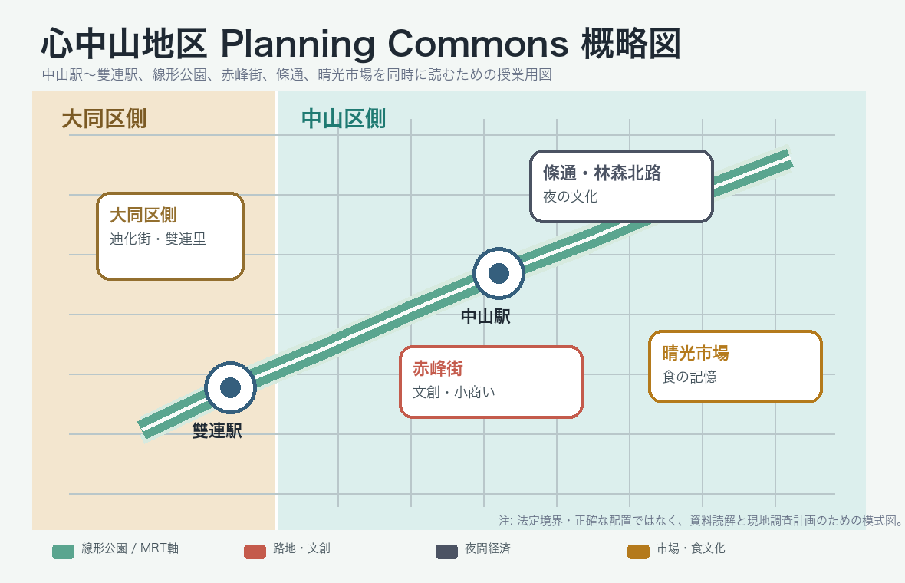

現況をつかむ
人口、年齢、商業、交通、人流、生活景のデータから、誰のどんな課題があるかを仮説化する。
Global Urban Regional Studio 2026
対象地
本サイトは、事前学習と現地調査で使うための資料入口である。 「人のデータ」と「空間のデータ」を同じ画面で見比べ、AIに投げる問いをつくる。

人口、年齢、商業、交通、人流、生活景のデータから、誰のどんな課題があるかを仮説化する。
線形公園、路地、騎楼、都市更新、用途規制などの空間制度と照らし合わせる。
SSD100と都市の鍼治療の事例を、心中山にそのまま移植せず、条件差を見ながら読み替える。
Orientation & Visual Notes
まず地図で場所を確認し、次に人口構成・資料の厚み・時間帯の違いを見比べる。数値は提案の答えではなく、現地で確かめるための仮説の入口である。
Course Area Map
赤色は中山地区中心部、橙色は北部の調査範囲。駅、公園、市場などの重点地点はマーカーで確認できる。
Reading Scales
広域の統計だけでも、個別の店舗だけでも提案は作れない。4つのスケールを行き来して、データと観察を重ねる。
People Data
横棒は0–32%の共通スケール。区平均だけでなく、駅周辺と大同区側の里を比較し、高齢者の存在を歩行・休憩・買い物の行動として観察する。
Material Coverage
資料数が多いこと自体が答えではない。自分の問いに合う資料を選び、最後は現地の声・写真・歩行記録で検証する。
Fieldwork Lens
同じ場所でも、時間帯が変わると利用者・音・光・安全感・商業の組み合わせが変わる。調査計画に時間差を入れる。
AI Material Navigator
このサイトは位置とデータを確認する入口。複数の資料を横断して要約・比較・問いづくりをするときは、授業用NotebookLMを使う。
NotebookLMで資料に質問する ↗Googleアカウントでログインし、回答の引用元と原資料を確認する。
People Data
人口、世帯、年齢、所得、産業、交通、地域言説を、提案の相手となる「人」の像に接続する。
Spatial Data
計画図書、制度、都市更新、歩行空間、公共施設不足、商圏摩擦を、提案の条件として整理する。
Case Workspace
HILIFEの都市の鍼治療データベースとSSD100を、授業用の読み替え軸つきカードとして横断検索する。
AI Prompt Studio
個室AIとプランニングコモンズを往復するための、授業用プロンプト雛形。
Fieldwork Commons
この公開試用版ではアップロードを停止しています。事前授業で必要性と運用方法を確認し、採用する場合は写真・PDF・短い動画を安全に共有できる機能を追加します。
Class Discussion
Inventory
授業で参照する資料の所在と用途を一覧化する。配布元はローカルパスではなく、共有用Google Driveフォルダで案内する。